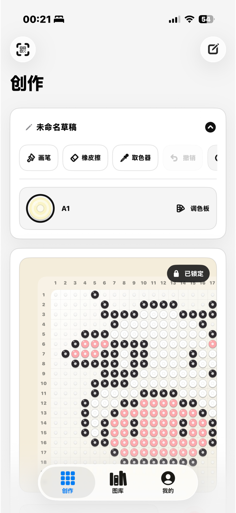
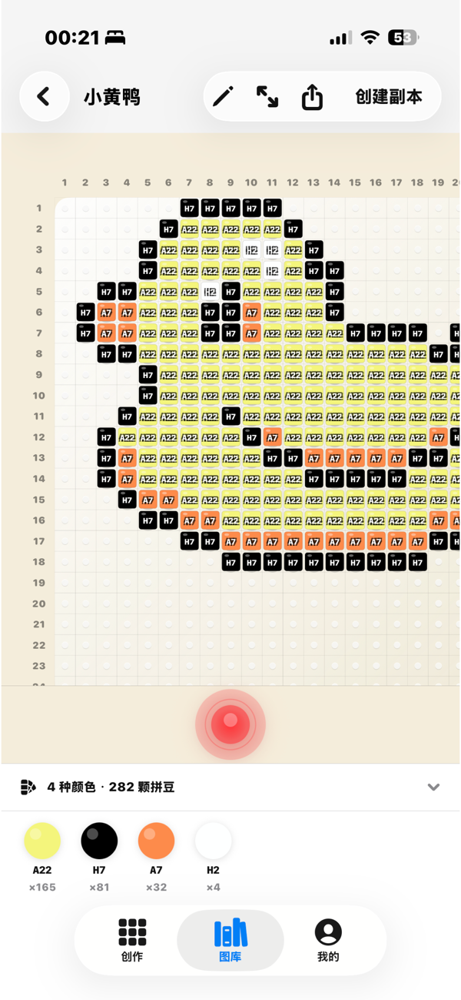

Pegboard 编辑Pegboard editing
在拼豆质感的画板上直接创作，圆形拼豆、中心孔、柔和阴影和行列数字都会帮助你保持方向感。Draw directly on a bead-style board with round beads, center holes, soft shadows, and numbered orientation marks.
iPhone 拼豆图纸工作室iPhone bead pattern studio
玩豆（BeadsMaker）是一款以创作为中心的拼豆图纸工具。打开就能画，在真实 pegboard 质感上摆放颜色，预览完成效果，并把清晰 PNG 保存到相册用于现实拼豆制作。
A quiet, local-first studio for designing pixel bead patterns, previewing the finished piece, and exporting images for real-world crafting.


在拼豆质感的画板上直接创作，圆形拼豆、中心孔、柔和阴影和行列数字都会帮助你保持方向感。Draw directly on a bead-style board with round beads, center holes, soft shadows, and numbered orientation marks.
用克制、清爽的预览检查完成作品。这里用于确认结果，不提供步骤式制作流程。Inspect the completed piece in a restrained preview designed for checking the work, not walking through making steps.
草稿保存在设备本地，完成图可以导出为 PNG 到相册。不强制登录，先把创作留给你。Save drafts on device, export finished PNG images to Photos, and keep creating without forced login.